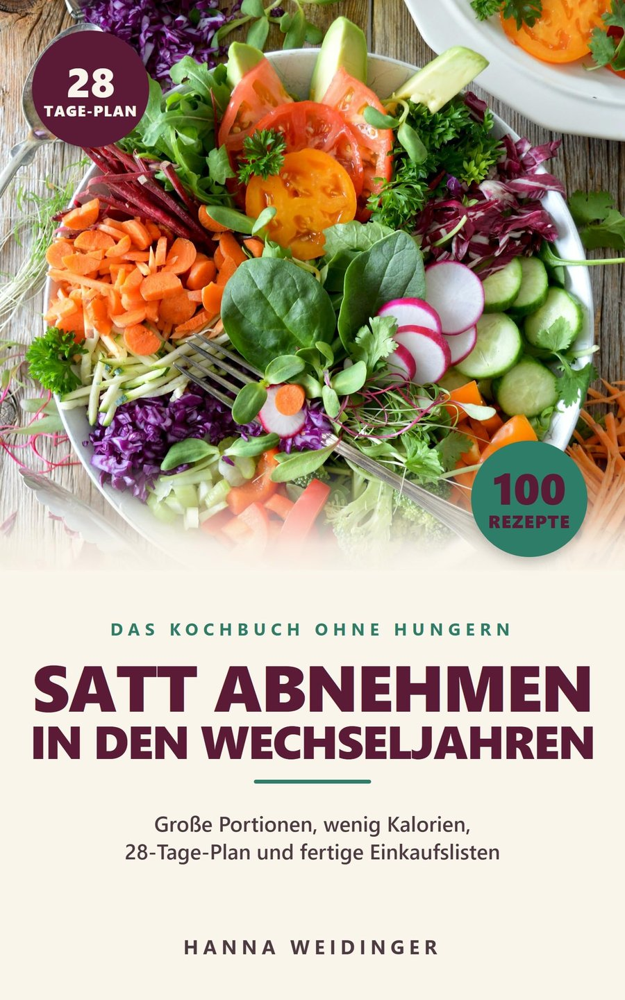

Schritt 1 · Blech
Ofen an, Blech rein
Buntes Ofengemüse aus Karotten, Paprika, Zucchini, Kirschtomaten, roten Zwiebeln und Knoblauch.
Sonntags-Plan · Folge 1 (zum Reel)
Samstag einkaufen, am Sonntag vier Bausteine vorkochen und von Montag bis Freitag jeden Tag etwas anderes essen – statt fünfmal derselben Dose.
Mengen & Portionen – ehrlich gerechnet: Die Grundbausteine ergeben 8 volle Hauptportionen (für 2 Erwachsene über 4 Arbeitstage, als Mittag- oder Abendessen). Mit den Vollkorn-Wraps und 4 frischen Eiern vom Samstagseinkauf streckst du die Bausteine ohne Mehrkochen auf alle 5 Arbeitstage (Mo–Fr). Wer am Freitag zwei weitere volle Doppelportionen ohne Streckung möchte, rechnet bei den vier Bausteinen einfach ein Viertel dazu.
Hinweis zu Zeiten & Herkunft: Alle Zeitangaben sind geplante Zeiten, nicht in einer Testküche gestoppt (beim ersten Durchgang dauert es etwas länger). Dieser Plan wurde eigens für diese Website geschrieben und stammt nicht aus den Büchern der Reihe.
Das Grundgerüst
Genau die vier Bausteine aus dem Reel – so aufeinander abgestimmt, dass Ofen und Herd gleichzeitig arbeiten.
Schritt 1 · Blech
Buntes Ofengemüse aus Karotten, Paprika, Zucchini, Kirschtomaten, roten Zwiebeln und Knoblauch.
Schritt 2 · Topf
Würziger Weiße-Bohnen-Tomaten-Eintopf mit Sellerie, Karotten, Oregano und Kreuzkümmel.
Schritt 3 · Getreide
Lockerer grober Bulgur in Gemüsebrühe (alternativ Reis, mit eigener Abkühl- und Gefrierregel).
Schritt 4 · Soße
Zitronen-Senf-Kräuter-Soße im Schraubglas – pur als Dressing oder mit Joghurt zur Bowl-Soße gerührt.
Samstag einkaufen
Für 2 Erwachsene (4 volle Tage plus Freitag-Ergänzungen). Am Handy direkt abhaken oder sauber für den Einkauf ausdrucken.
Nicht auf der Liste: Salz, schwarzer Pfeffer und Wasser. Schau vor dem Supermarkt kurz in den Schrank: Öl, Brühe und Gewürze hast du meistens schon da.
Sonntag · 110 Min. Planzeit
Vom Vorheizen bis zum sauberen Herd und den beschrifteten Boxen. Geplante Zeiten, nicht in einer Testküche gestoppt.
Backofen auf 220 °C Ober-/Unterhitze (oder 200 °C Umluft) vorheizen, Blech mit Backpapier belegen. Alle Zutaten, Töpfe, Schraubglas und sauberen Dosen bereitstellen.
Karotten, Paprika, Zucchini und rote Zwiebeln schneiden, mit Kirschtomaten, ungeschälten Knoblauchzehen, Öl und Gewürzen direkt auf dem Blech mischen. Bei Minute 00:25 kommt das Blech für ca. 30–35 Min. in den Ofen.
Gelbe Zwiebeln, Sellerie und Karotten fein würfeln, Bohnen abspülen. Gemüse im Öl anschwitzen, Tomatenmark mitrösten, mit Tomaten, Brühe, Bohnen und Gewürzen aufkochen. Ab 00:40 köchelt der Topf 30 Min. leise vor sich hin.
900 ml Gemüsebrühe im kleineren Topf aufkochen, Bulgur einrühren und zugedeckt 12–15 Min. sanft garen. Zwischendurch das Ofengemüse einmal wenden. Nebenbei die Soßen-Zutaten im Schraubglas kräftig durchschütteln.
Ofenblech herausholen (Gemüse direkt auf dem Blech auskühlen lassen). Bulgur mit der Gabel lockern und auf einer großen Platte verteilen. Eintopf um 01:10 abschmecken und flach in 2–3 offene Dosen umfüllen, damit kein Hitzestau entsteht.
Bretter, Messer, Töpfe und Rührlöffel spülen oder einräumen und die Arbeitsplatte abwischen. In dieser Zeit dampfen Ofengemüse, Bulgur und Eintopf sicher ab.
Sobald nichts mehr dampft (spätestens nach 2 Stunden): Dosen schließen und mit Kreppband + Tag beschriften. Mo–Mi in den Kühlschrank, Do (und Reste für Fr) flach ins Gefrierfach.
Rezepte der 4 Bausteine
Baustein 1 · Schritt 1
Alles auf dem Backpapierblech mit Öl, Paprikapulver, Thymian, Salz und Pfeffer mischen und in einer Lage verteilen. Bei 220 °C Ober-/Unterhitze (200 °C Umluft) 30–35 Min. backen, nach ca. 20 Min. einmal wenden.
Baustein 2 · Schritt 2
Zwiebeln, Sellerie und Karotten im Öl 5–6 Min. anschwitzen, Tomatenmark 1 Min. mitrösten. Tomaten, Brühe, Bohnen und Gewürze zugeben, aufkochen und mit schrägem Deckel ca. 30 Min. leise köcheln lassen. Lorbeerblatt entfernen, kräftig abschmecken.
Baustein 3 · Schritt 3
Brühe aufkochen, Bulgur einrühren, auf niedrigste Stufe schalten und zugedeckt 12–15 Min. quellen lassen, bis die Flüssigkeit aufgenommen ist. Mit einer Gabel auflockern.
Reis-Hinweis: Wenn du statt Bulgur lieber Reis kochst, kühle ihn besonders rasch flach ausgebreitet ab, stell nur die Portion für Montag in den Kühlschrank und friere alle übrigen Portionen schon am Sonntag ein.
Baustein 4 · Schritt 4
Alles im sauberen Schraubglas fest verschließen und kräftig schütteln. Durch die getrockneten Kräuter und das Knoblauchpulver hält das Dressing sauber gekühlt von Montag bis Freitag (ca. 160 ml).
Haltbarkeit & Sicherheit
Klare Fristen statt Raten am Mittwochabend – damit alles bis zum Ende der Woche gut bleibt.
Keinen heißen Topf mit Deckel stehen lassen und nichts dampfend Heißes in den Kühlschrank stellen. Flach ausbreiten oder in offene Dosen füllen; sobald kein Dampf mehr aufsteigt (spätestens nach 2 Stunden), abdecken und kühlen.
Kühlschrank auf höchstens 7 °C (besser 5 °C) einstellen. Ofengemüse, Bohnen-Eintopf und Bulgur gehören ins unterste Fach nahe der Rückwand und werden bis spätestens Mittwoch gegessen.
Die Portionen für Donnerstag (und restliche Bausteine für Freitag) am Sonntag nach dem Abkühlen flach bei −18 °C einfrieren. Über Nacht im Kühlschrank auftauen, am selben Tag essen, nicht wieder einfrieren.
Aufgewärmtes auf mind. 70 °C überall erhitzen (2 Min., in der Mikrowelle zwischendurch umrühren) und nur einmal erwärmen. Babyspinat, Joghurt, Feta, Wraps und Eier erst am Vorabend oder vor dem Essen dazugeben.
Abwechslung ohne Mehrkochen
Jede Idee gilt für 2 Portionen (2 Erwachsene). Fürs Büro Soße und Joghurt im kleinen Döschen getrennt mitnehmen.
Montag · Kühlschrank
Bulgur und Ofengemüse heiß machen. 2–3 EL Naturjoghurt mit 2 EL Zitronen-Senf-Soße glattrühren und über den warmen Teller geben, eine Handvoll Babyspinat unterheben.
Dienstag · Kühlschrank
Halbe Eintopf-Menge aus dem Kühlschrank sprudelnd heiß aufkochen, mit einer Kelle Bulgur servieren und ca. 75 g zerbröckelten Feta darübergeben.
Mittwoch · Ohne Mikrowelle
2 Vollkorn-Wraps mit Babyspinat, kaltem Ofengemüse und Bulgur füllen. Joghurt + Zitronen-Senf-Soße getrennt im Döschen einpacken und erst beim Essen darüberträufeln.
Abends die Donnerstag-Boxen aus dem Gefrierfach zum Auftauen in den Kühlschrank stellen.
Donnerstag · Aufgetaut
Aufgetauten Bohnen-Eintopf und restliches Ofengemüse zusammen kräftig durcherhitzen (mind. 70 °C) und mit den übrigen ca. 75 g Feta bestreuen.
Freitag · Reste + 5 Min. frisch
Verbleibenden Bulgur und Eintopf- oder Gemüsereste heiß auf dem restlichen Babyspinat anrichten, mit dem Rest Zitronen-Soße beträufeln und je 1–2 frische Spiegeleier dazu braten (oder noch einen Wrap rollen).
Die Reihe
Wenn dir dieses Baustein-Prinzip hilft: Hier sind die derzeit lieferbaren Titel von Hanna Weidinger bei Amazon. Ein weiterer Band zum Thema Meal Prep folgt nach dem 10. Dezember 2026.

Band 1
Schnelle Alltagsrezepte, ein 28-Tage-Plan und fertige Einkaufslisten.

Band 2
Alltagstaugliche Rezepte, 28-Tage-Plan und fertige Einkaufslisten.

Band 3
Alltagsrezepte, 28-Tage-Plan und Einkaufslisten für die Woche.

Band 4
Eiweißreiche Alltagsrezepte ohne Pulver und ohne Shakes, mit 28-Tage-Plan und Einkaufslisten.

Band 5
Rezepte für große Portionen, 28-Tage-Plan und Einkaufslisten.

Band 6
Rezepte mit 30 g Eiweiß je Hauptmahlzeit, Calciumwert je Rezept, 28-Tage-Plan und Einkaufslisten, ohne Pulver.

Band 7
Das Kochbuch mit 8 Wochenplänen und 100 Gerichten: sonntags vorkochen, jeden Tag anders.
Auf der Amazon-Serienseite siehst du alle zugeordneten Bände im Überblick.
Bitte beachten
Die Bücher und diese Seite ersetzen keine medizinische oder ernährungstherapeutische Beratung. Bei gesundheitlichen Fragen wende dich an eine Ärztin, einen Arzt oder eine qualifizierte Fachperson.
Texte auf dieser Seite und die Bücher der Reihe sind unter Verwendung digitaler Werkzeuge entstanden.